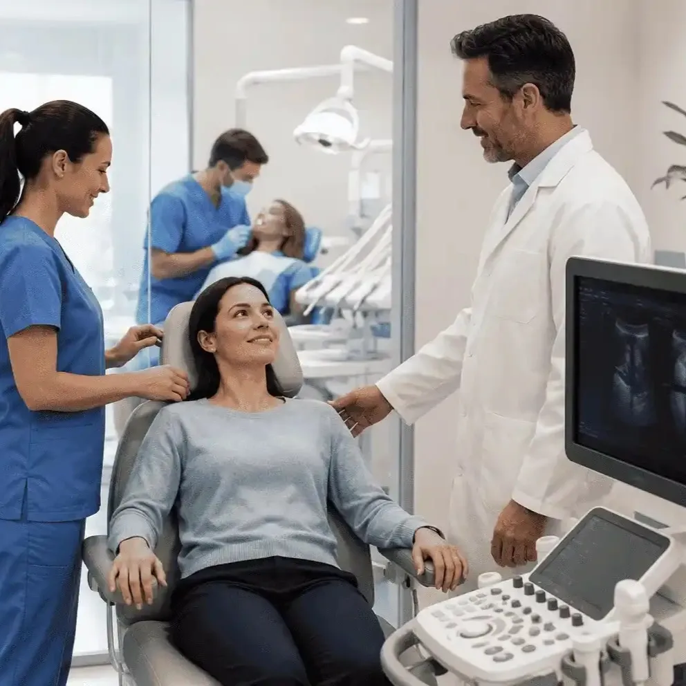
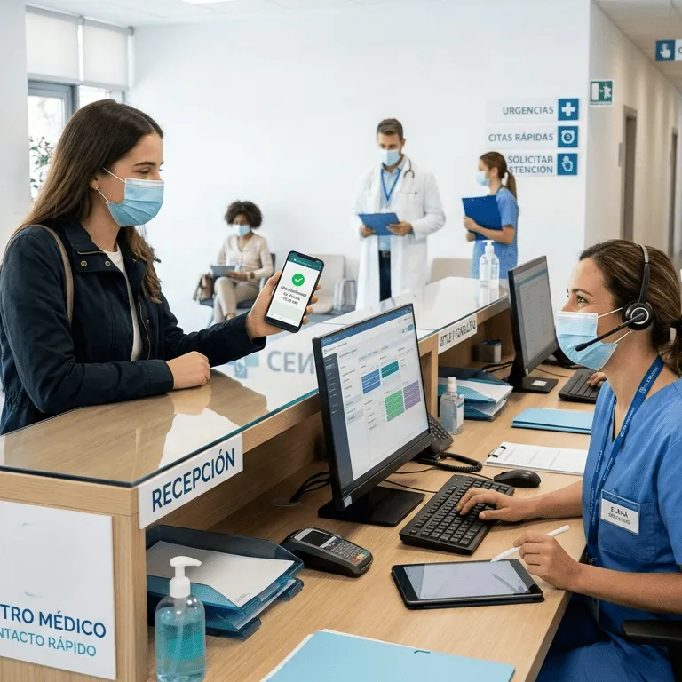
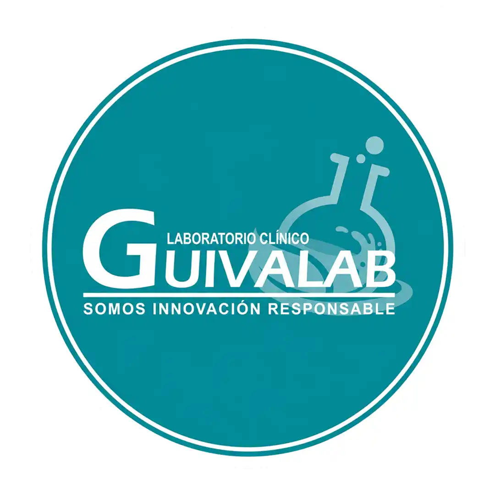

01
Atención cercana
Un equipo de salud que escucha, orienta y atiende a cada paciente con dignidad.
En Durán: especialidades médicas, diagnóstico, laboratorio clínico y orientación clara desde el primer contacto.
Recibe orientación clara, atención por especialidades y procesos confiables para cuidar tu salud.
Un equipo de salud que escucha, orienta y atiende a cada paciente con dignidad.

Tecnología de soporte para consultas, diagnóstico, laboratorio e imagen.

Consulta por WhatsApp, agenda tu atención o abre Google Maps para llegar.
Consultas médicas, laboratorio, ecografía y controles clínicos en un solo lugar.
Valoración de 4.9 estrellas en Google como señal de satisfacción.
Servicios para pacientes, familias y empresas con orientación desde el primer contacto.
Salud ocupacional y soporte preventivo para empresas que requieren controles periódicos.
La experiencia está diseñada para que el paciente pueda consultar, agendar, ubicarse y llegar con una idea clara del servicio que necesita.
Exámenes de rutina y pruebas especializadas para control, diagnóstico y seguimiento médico.
Evaluación de glóbulos rojos, glóbulos blancos y plaquetas para obtener una visión general de salud.
Pruebas útiles para controles metabólicos y seguimiento clínico indicado por el profesional de salud.
Análisis relacionados con el sistema inmune y detección de anticuerpos en sangre.
Pruebas cualitativas, cuantitativas e hisopado para detección relacionada con SARS-coronavirus.
Estudios de orina y muestras coproparasitarias para apoyo diagnóstico.
Cultivos bacteriológicos para identificar bacterias causantes de infecciones.
Pruebas especializadas para seguimiento médico y evaluación de indicadores específicos.
Convenios con empresas y tomas de muestras domiciliarias bajo coordinación previa.
Consulta especialidades, estudios diagnósticos y laboratorio en un solo lugar.
Atención médica integral para evaluación inicial, control de síntomas, seguimiento y orientación preventiva.
GuivMedic combina especialidades médicas, diagnóstico, laboratorio y trato humano para apoyar cada decisión de salud.
Visítanos en El Recreo 3ra etapa Mz 324 villa 26, Durán 090702, Ecuador. También puedes escribirnos por WhatsApp para consultar especialidades, exámenes, estudios y preparación previa.
Horarios: Lunes a sábado de 8:00 AM a 5:00 PM
Especialidades y servicios: Medicina general, consultas ginecológicas, urológicas y pediátricas, laboratorio, ecografía, salud ocupacional, electrocardiogramas y cardiología.
Escríbenos por WhatsApp para confirmar preparación, horario o indicaciones según la consulta, examen o estudio solicitado.
Sí. GuivMedic cuenta con servicios de salud ocupacional y puede orientar controles periódicos para empresas.
Estamos en El Recreo 3ra etapa Mz 324 villa 26, Durán. Puedes abrir la ubicación en Google Maps desde esta página.

Escríbenos por WhatsApp y te orientamos con la especialidad, el examen, la preparación y la ubicación.